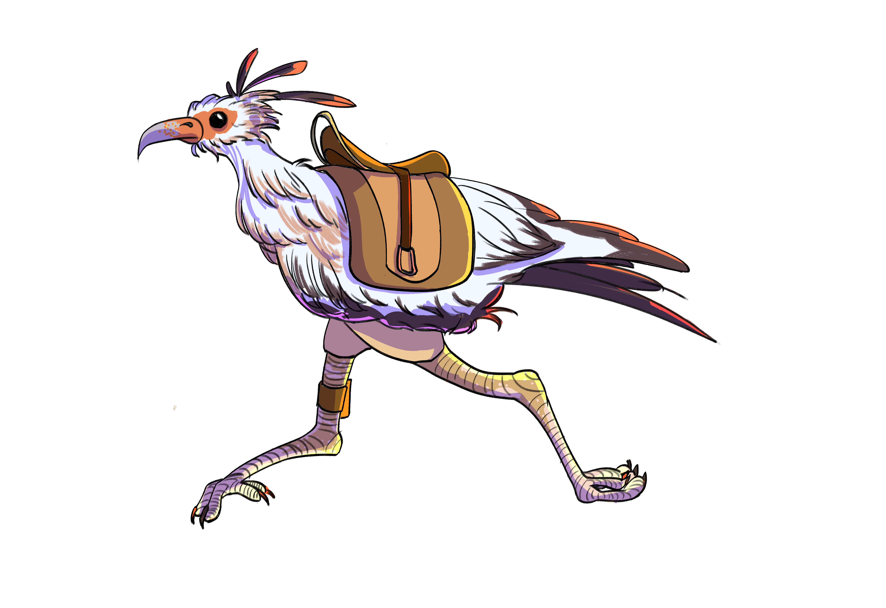
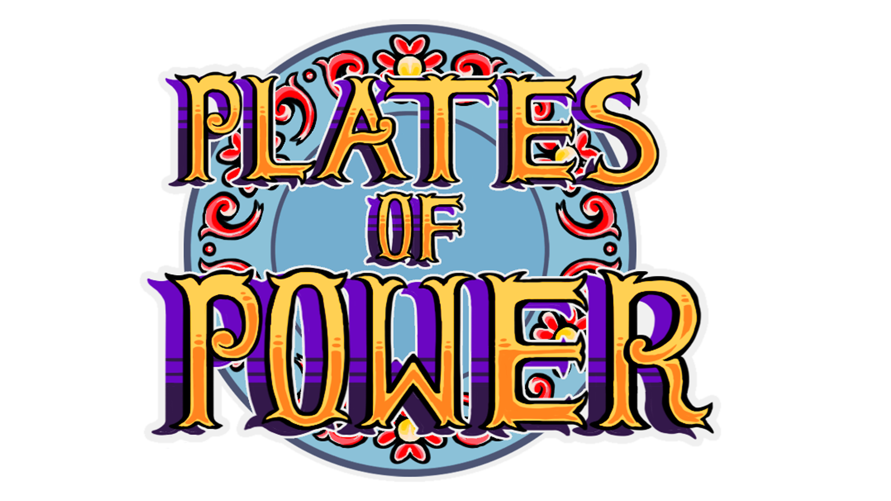

My Projects

Echoes of the Salt Flats
A tabletop roleplaying game created to explore how worldbuilding surfaces across different forms of interactive media
Learn More

Plates of Power
Plates of Power is a rogue-like game inspired by Latino Culture, emphasizing power, failure, and the importance of community.
Learn MoreCelestial Guardians
A strategy-based game where players protect the elements through powerful celestial beings. Will you restore balance?
Learn More